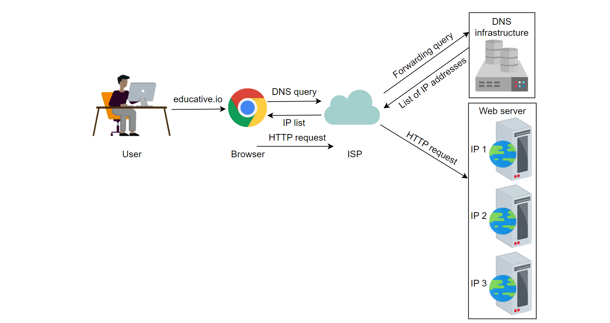
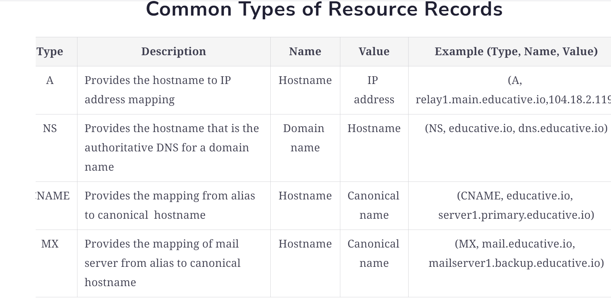
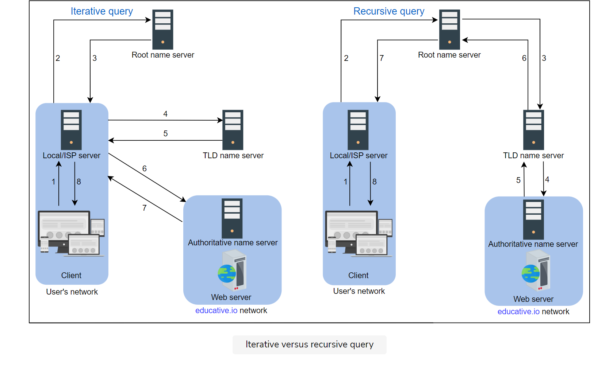
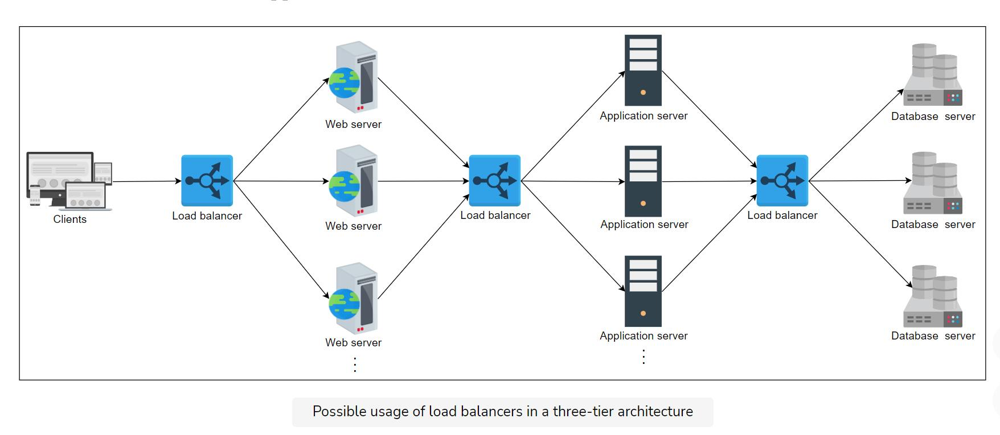

Domain Name System (DNS)
What is DNS?
The domain name system (DNS) is the Internet’s naming service that maps human-friendly domain names to machine-readable IP addresses. The service of DNS is transparent to users. When a user enters a domain name in the browser, the browser has to translate the domain name to IP address by asking the DNS infrastructure.

Important details
Let’s highlight some of the important details about DNS, some of which we’ll cover in the next lesson:
Name servers
It’s important to understand that the DNS isn’t a single server. It’s a complete infrastructure with numerous servers. DNS servers that respond to users’ queries are called name servers.
Resource records
The DNS database stores domain name to IP address mappings in the form of resource records (RR). The RR is the smallest unit of information that users request from the name servers. There are different types of RRs. The table below describes common RRs. The three important pieces of information are type, name, and value. The name and value change depending upon the type of the RR.

Caching
DNS uses caching at different layers to reduce request latency for the user. Caching plays an important role in reducing the burden on DNS infrastructure because it has to cater to the queries of the entire Internet.
Hierarchy
DNS name servers are in a hierarchical form. The hierarchical structure allows DNS to be highly scalable because of its increasing size and query load. In the next lesson, we’ll look at how a tree-like structure is used to manage the entire DNS database.
How are DNS names processed?
Unlike UNIX files, which are processed from left to right, DNS names are processed from right to left. In the case of educative.io, the resolvers will first resolve the .io part, then educative, and so on.
Iterative vs Recursive

DNS as a distributed system
Although the DNS hierarchy facilitates the distributed Internet that we know today, it’s a distributed system itself. The distributed nature of DNS has the following advantages:
- It avoids becoming a single point of failure (SPOF).
- It achieves low query latency so users can get responses from nearby servers.
- It gets a higher degree of flexibility during maintenance and updates or upgrades. For example, if one DNS server is down or overburdened, another DNS server can respond to user queries.
Protocol
Although many clients use DNS over unreliable user datagram protocol (UDP), UDP has its advantages. UDP is much faster and, therefore, improves DNS performance. Furthermore, Internet service’s reliability has improved since its inception, so UDP is usually favored over TCP. A DNS resolver can resend the UDP request if it didn’t get a reply to a previous one. This request-response needs just one round trip, which provides a shorter delay as compared to TCP, which needs a three-way handshake before data exchange.
Load Balancers
The job of the load balancer is to fairly divide all clients’ requests among the pool of available servers. Load balancers perform this job to avoid overloading or crashing servers.

load balancers provide
- flexibility :Add or remove machines transparently on the fly,
- reliability :Buggy hosts can be removed through health monitoring which makes the system reliable,
- redundancy :Multiple paths leading to the same destination or failed server’s load is rerouted to the failover machine,
- efficiency :Divide load evenly on all machines to use them effectively from the point of view of the service provider.